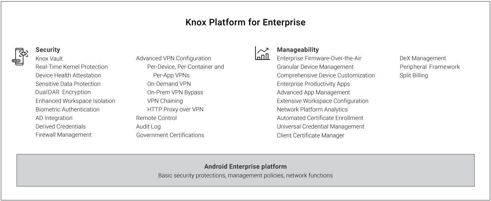

The Samsung Knox platform
Last updated February 20th, 2024
Samsung Knox brings defense-grade security on the most popular consumer devices to all enterprises. The Knox Platform provides best-in-class hardware-based security, policy management, and compliance capabilities beyond the standard features commonplace in today’s mobile device market. The Knox Platform is the cornerstone of a strong mobile security strategy supporting a wide variety of Samsung devices.
Why use Samsung Knox?
The Knox Platform helps you and your enterprise avoid the security gaps common on many mobile platforms. Knox received strong ratings in 25 of 28 categories in Gartner’s December 2017 Mobile OSs and Device Security: A Comparison of Platforms and has received strong ratings for the last three years in a row.
The Knox Platform’s security hardening supports every aspect of mobile device operation. The Knox Platform enables trust in your mobile endpoints with advanced features like the evolutionary Knox Vault to the patented Real-Time Kernel Protection . The Knox Platform ensures IT admins can securely bulk deploy the best mobile device hardware, and quickly integrate with existing business infrastructure and apps.
Key benefits for enterprises
- Easily meet your organization’s security and compliance requirements by providing solid platform integrity, strong data protection, and fine-grained policy enforcement.
- Seamlessly activate and manage Knox Platform features through an Enterprise Mobility Management (EMM) system.
- Flexibly support infrastructure, deployment, and management requirements through centralized remote device control, advanced VPN management, allowing and blocking apps, and granular policies that control all aspects of Samsung devices.
- Effortlessly upgrade from Android Enterprise, leveraging a comprehensive set of Knox Platform benefits without affecting existing deployments.
- Securely deploy the innovative Samsung Desktop Experience (DeX) in new work environments, unifying mobile and desktop computing on one device.
The Knox Platform’s cutting-edge security technology continues to be widely adopted and proven by numerous government, security, and financial agencies throughout the world. Samsung continually works with global government organizations and international regulatory bodies to meet a wide range of certification requirements designed to protect public safety and consumer privacy.
Knox Platform highlights
The Knox Platform provides a robust set of features to fill security and management gaps, resolve pain points identified by enterprises, and meet the strict requirements of highly regulated industries. Key strengths include the following:

For a quick overview of these features, see Feature summary.
Security highlights
The following sections describe how the Knox Platform provides an industry-leading ecosystem of products and services to secure and ease mobile device management.
Hardware-backed security
The Knox Platform defends against security threats and protects enterprise data through layers of security built on top of a hardware-backed trusted environment.
- Trusted environment — A trusted environment separates security-critical code from the rest of the operating system. This strategic separation ensures only trusted processes that are isolated and protected from attacks and exploits can perform sensitive operations, such as user authentication and key encryption and decryption. Trusted environments perform integrity checks prior to executing any software. These checks detect malicious attempts to modify the trusted environment and the software running on the device.
- Hardware-backed — A trusted environment is hardware-backed if hardware protections isolate the environment from the rest of the running system. This isolation ensures that vulnerabilities in the main operating system don’t directly affect the security of the trusted environment. The environment also ties integrity checks of the software running in the trusted environment to cryptographic signatures stored in the device hardware. Hardware-backed integrity checks prevent an attacker from exploiting software vulnerabilities to bypass protections and load unapproved software into the trusted environment.
The Knox Platform uses a hardware-backed trusted environment and the specific components depend on the device hardware. For example, ARM processors provide a Trusted Execution Environment (TEE) that leverages components such as the ARM TrustZone, ARM Hypervisor Mode, and Embedded Secure Elements. Knox features that use the trusted environment include Real-time Kernel Protection (RKP), Trusted Boot, Device Health Attestation, Certificate Management, Sensitive Data Protection (SDP), and Network Platform Analytics (NPA).
Futhermore, the Knox Vault introduced with the Samsung Galaxy S21 offers an isolated, tamper-proof, secure subsystem with its own processor and memory. Knox Vault operates completely independently from the primary processor running the Android OS, and guards against attacks that exploit shared resources, such as software side-channel attacks that can compromise other software executing on the same processor. This separation means Knox Vault protects sensitive data even if the primary processor itself is completely compromised.
App isolation
The Knox Platform uses app isolation to prevent rogue apps from intentionally or inadvertently accessing unauthorized data. The Knox Platform provides several forms of app isolation to create a protected app container space on Samsung devices. Each option is based on the same core isolation technology called Security Enhancements for Android (SE for Android.) SE for Android is an integration of SELinux and Android, expanded to cover Android components and design paradigms. The Knox Platform offers these options:
- Android Enterprise on Samsung devices — Android Enterprise provides app isolation through work profiles, which provide basic isolation of enterprise apps from personal apps. When using Android Enterprise on Samsung devices, Knox provides features like Real-time Kernel Protection (RKP), secure enterprise apps, and hardware-backed storage of certificates and keys, making Android Enterprise even better on Samsung devices.
- Separated Apps — For enterprises that need full control over a corporate-owned device, while still enabling authorized third-party business apps, Samsung exclusively offers Separated Apps to isolate third-party apps in a sandboxed folder.
- SE for Android Management Service (SEAMS) — With SEAMS, you can isolate a single app or small set of trusted apps, to lock down the apps in the same container. SEAMS containers have no special GUI. Apps in a SEAMS container appear with the rest of the apps on the device, but are differentiated with a shield badge to show that they’re isolated and protected from apps not sharing their same container. You can create as many of these SEAMS containers as you want on-the-fly.
Data protection
Enterprises can protect personal and enterprise data on mobile devices using a rich set of Knox features:
- User authentication — Samsung Knox devices support not just password, PIN, and pattern authentication but also the latest biometric authentication such as ultrasonic fingerprint sensors. Options are available for both device lockscreen authentication as well as work profile authentication. Through the Knox Platform, you can enforce two-factor authentication or enterprise AD credentials for the work profile to ensure stronger data protection.
- Encryption of device data — Samsung Knox devices provide data encryption through Sensitive Data Protection, which binds to the hardware-backed Root of Trust and user authentication. This encryption ensures data is decrypted only on the device where the data is stored, and only by the device owner. DualDAR Encryption offers two instances of encryption to achieve an even higher level of reliability.
- Encryption of network data — Samsung Knox devices offer the widest selection of advanced VPN features, providing the ability to configure a separate VPN for individual apps to reinforce data isolation even further. Knox also offers always-on VPN, on-demand VPN, on-premise VPN bypass, HTTP proxy over VPN, multiple active tunnels, strict data leakage controls, and VPN chaining or cascading.
- Device tracking, locking, and erasing — Samsung Knox devices offer the ability to track, geofence, and automatically lock devices based on events and security policies. For example, a device that leaves a specified geographic perimeter is locked, wiped of data, or reset to factory defaults.
Manageability highlights
Device management and deployment
Enterprises with tens, hundreds, or thousands of employee mobile devices need to manage them easily, securely, and efficiently. Through EMM systems, IT admins can use a web console to centrally manage remote devices over-the-air. IT admins can control Samsung Knox devices comprehensively, managing device features with ease.
This management is possible through the Samsung Knox SDK, which offers over 1300 APIs for granular and flexible control over Samsung devices. This functionality is on top of the basic APIs offered through the Android SDK, providing an even more powerful superset of capabilities. An EMM app on an employee device receives IT admin commands from the EMM web console, and calls Knox APIs to deploy commands on Knox devices. This integration enables enterprise IT admins to deploy IT policies to manage and secure every aspect of Knox devices.
Device management services
To address a variety of business needs beyond security, the Samsung Knox portfolio is complemented by robust cloud services that ease mobile device deployment, customization, and management. These services include:
- Knox Mobile Enrollment — With this free service, enterprises can use a web console or REST API calls to automate device enrollment, either individually or in bulk. After an IT admin registers a device with this service, the device user simply turns it on and connects it to a Wi-Fi or 3G/4G/5G mobile network to enroll it with an EMM system. There is no manual enrollment of individual devices, and no need for IMEI management and verification — all onerous, time-consuming, and error-prone tasks.
- Knox Configure — Samsung phones, tablets, and wearables are fully customizable to work in numerous vertical markets such as hospitality, retail, and entertainment. Through a web console, Systems Integrators can create purpose-built devices that present a customized user interface, for example, an information kiosk, point-of-sales terminal, or in-flight entertainment system. The Systems Integrators can customize or restrict almost all aspects of device configuration and the user experience, including boot animations incorporating custom enterprise logos, display settings, wallpapers, network configurations, notifications, and software updates.
Learn more
This White Paper provides an overview of the Knox Platform’s security features and how they can resolve common enterprise mobile deployment pain points. The document focuses on the unique abilities of the Knox Platform. For information about other features, see the Samsung Knox website.
On this page
Is this page helpful?